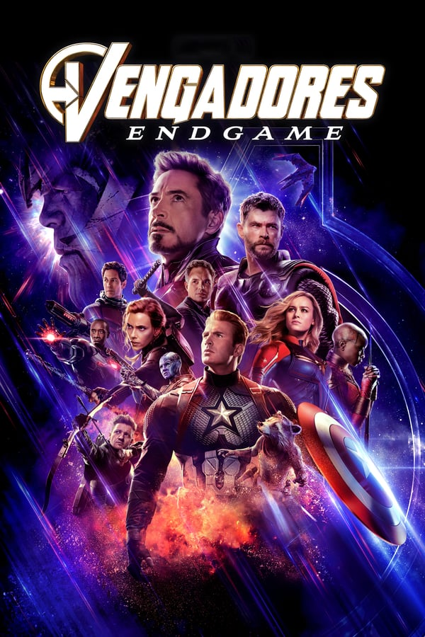

Multimedia
<<Anterior Siguiente>> Portada

Ficha Tecnica:
Fecha de estreno: 25 de Abril de 2019 (3h 1min)Dirigida por: Joe Russo / Anthony Russo
Reparto: Robert Downey Jr, Chris Hemsworth, Chris Evans, Jeremy Renner, Scarlett Johansson, Mark Ruffalo, mas
Género: Sci-Fi, Acción
País: EE.UU
Sinopsis
Después de los eventos devastadores de 'Vengadores: Infinity War', el universo está en ruinas debido alas acciones de Thanos. Con la ayuda de los aliados que quedaron, los Vengadores deberán reunirse una
vez más para intentar deshacer sus acciones y restaurar el orden en el universo de una vez por todas,
sin importar cuáles sean las consecuencias... Cuarta y última entrega de la saga "Vengadores".